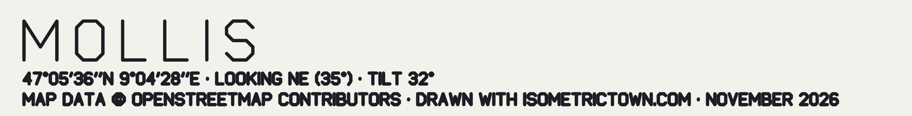
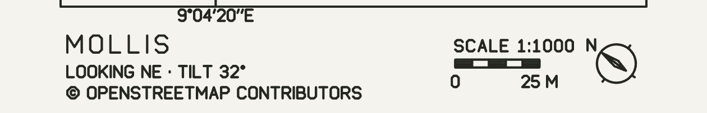

15 November 2026 · Original review
The broad-pen footer now uses readable lettering and shorter notes. The place title sits above the viewing direction and tilt, followed by the OpenStreetMap credit. Scale labels and the compass N grow with the pen too. The regular-pen footer retains its full wording.

When the usual footer text would be less than 4.8 pen widths tall, the compact layout removes the repeated centre coordinates, exact bearing, maker line and date from the printed notes. The SVG description still contains the location, bearing, scale, maker and map credit. The credit takes priority over optional notes; it can wrap to two lines. A title or viewing note is omitted if it cannot fit at a readable size.

Reviewed the broad monochrome A4 golden, before-and-after Mollis sheets at 1:1000 and 1:2000 with a 0.7 mm pen, their busiest close-ups, enlarged footers and an isolated portrait footer. Only the broad-pen golden changed. All scene feature and facet totals, counts and census remain identical; the other eleven goldens remain identical. The broad golden plotting estimate falls from 27.5 to 26.9 minutes.
Tests check landscape and portrait layouts at 10, 20 and 30 mm margins, readable text size, retained map credit, sheet bounds and separation between text labels. Build and all 597 tests pass. The LOD lab excludes marginalia from its feature scores, so those scene scores stay unchanged.
Before lab report · After lab report (local generated files).
No physical prints, all presets, every place-name length or every pen/margin combination were inspected. Very small available margins can still leave no room for footer notes. Roof outlines remain deferred.